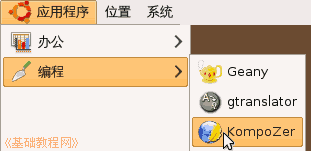

KompoZer 教学课程设计
作者：TeliuTe 来源：基础教程网
一、运行 KompoZer 返回目录 下一课这一课，我们学习打开程序和保存网页；
1、启动 KompoZer
1）如果是安装版的 KompoZer，直接在应用程序菜单中打开；

2）如果是直接复制过来的，打开文件夹双击里面的 KompoZer 文件；
3）如果是在命令行中运行，用 cd 命令进入文件夹，再输入 ./kompozer ；
4）出来的窗口中，关闭日积月累小窗口；
5）看一下窗口，然后关闭程序；
本节学习了启动 KompoZer 的基础知识，如果你成功地完成了练习，请继续学习下一课内容；
本教程由86团学校TeliuTe制作|著作权所有
基础教程网：http://teliute.org/
美丽的校园……
转载和引用本站内容，请保留版权信息和本站链接。